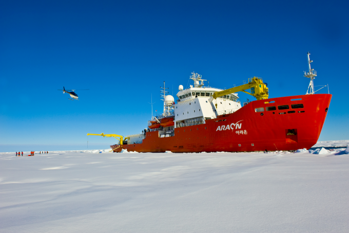

1. 빙하 감소와 기후 변화
"북극 온도 상승이 전 세계 평균보다 3배 빠르게 진행되고 있으며,
이로 인해 얼음이 빠르게 녹아내리고 있습니다"
"빙하가 녹으면서 주변 지역은 침식되고, 해안선 근처의 마을과 생태계가 위협받고 있습니다"
- 1979년 이후 북극의 해빙 면적은 매년 평균 12.6%씩 감소하고 있습니다.
- 여름철 북극 해빙이 완전히 사라질 가능성이 2030년대 초반으로 앞당겨졌습니다.
- 이러한 변화는 북극 지역 온도가 전 세계 평균보다 약 3배 빠르게 상승하는 북극 증폭(Arctic Amplification) 현상 때문입니다.
- 결과적으로 해수면 상승으로 전 세계 해안 지역이 위협받고 있습니다.
- 제트기류 변동: 북극 온난화로 인해 제트기류가 약화되면서 중위도 지역에 한파, 폭염, 폭우 등 극단적인 날씨를 유발합니다.
- 겨울철 이상 한파, 여름철 극심한 폭염이 빈번해졌습니다.
- 이러한 현상은 농작물 생산에 악영향을 미치고, 세계 식량 안보를 위협합니다.
도전 과제
2. 생태계 변화와 위기
"북극곰, 바다표범, 북극여우와 같은 북극 생물들은 빙하 감소로 인해 서식지를 잃고 있습니다"
"따뜻한 수온으로 새로운 종들이 북극으로 이동하며 기존 생태계의 균형이 무너지고 있습니다"
- 먹이 부족과 서식지 파괴로 인해 북극곰 개체 수는 지난 30년간 약 30% 감소한 것으로 추정됩니다.
- 따뜻해진 해수 온도로 인해, 북극 지역에서는 원래 서식하지 않았던 생물들이 출현하고 있습니다.
- 최근 북극해 고위도에서 열대성 오징어 유생이 발견되었으며, 이는 생태계의 균형을 위협할 수 있는 신호입니다.
도전 과제
3. 경제적·지정학적 변화
"북극 해빙 감소로 인해 석유, 천연가스, 광물 개발이 활발해지고 있습니다"
"자원 개발 과정에서 발생하는 오염물질은 북극 생태계에 큰 위협이 되고 있습니다"
"북극 항로가 열리면서 선박 운행이 늘어나고, 이로 인해 해양 생태계가 교란되고 있습니다"
- 이는 아시아와 유럽을 잇는 최단 경로로 부각되어 물류 및 운송 산업에 영향을 미치고 있습니다.
- 북극 지역은 석유, 천연가스, 희귀 광물 자원으로 풍부한 잠재력을 가지고 있어, 러시아, 미국, 캐나다 등 국가들 간의 경쟁이 치열합니다.
- 이러한 자원 개발은 북극 생태계에 심각한 환경적 위협을 초래할 수 있습니다.
도전 과제
4. 지정학적 갈등과 국제 협력
"북극 자원 확보를 둘러싼 국가 간의 경쟁이 치열해지고 있습니다"
"북극 지역 관할권을 주장하는 국가 간의 갈등이 국제적 긴장을 초래하고 있습니다"
- 북극에는 풍부한 석유, 천연가스, 희귀 광물 자원이 매장되어 있어, 이들 국가 간 자원 개발을 위한 갈등이 격화되고 있습니다.
- 북극 해빙이 줄어들면서 아시아와 유럽을 잇는 새로운 해상 항로가 열렸습니다.
이는 물류와 무역 측면에서 전략적 가치가 높아 여러 국가의 이목을 끌고 있습니다.
- 북극 지역의 중요성이 부각되면서 군사적 활동도 증가하고 있습니다.
일부 국가들은 북극권에 군사 기지를 구축하거나 군사 훈련을 확대해 긴장감을 고조시키고 있습니다.